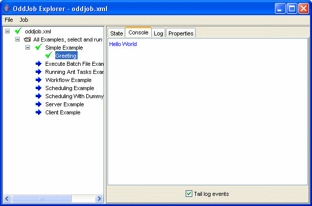
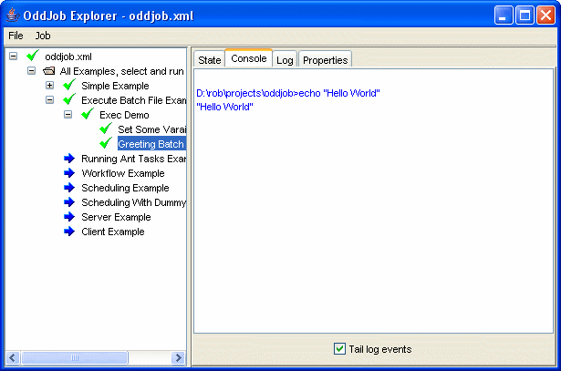
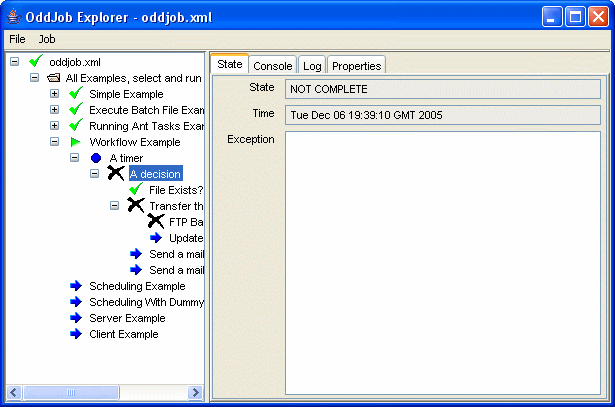
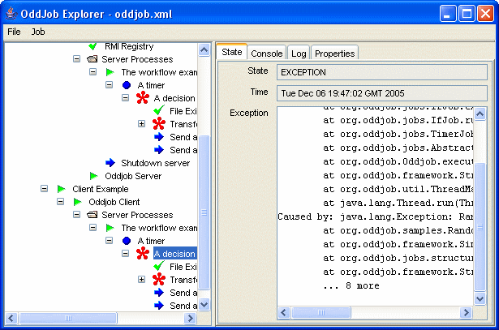

Let's see what Oddjob can do.
In addition to these examples, there are also many examples
from the Reference, this User Guide, and the Developer Guide
in the examples directory
All examples should begin with the simplest example possible and here it is!
This example demonstrates executing a batch file from Oddjob and introduces us to using sequences of jobs and variables.
The example consists of a sequence of two jobs. The first sets a variable, the second executes the batch file with the variable value passed in as an argument.
An 'if' job uses the return state of one job to decide which of a number of alternate job branches to execute.
This job uses a random task to simulate jobs executing with mixed results. The example is run in a timer loop to continually show the flow of events.
This is a demonstration of the flexible scheduling features of Oddjob.
A file Producer creates a file with a unique sequence number every 5 minutes. The example is run with a persister so that the producer state will be saved after each run. This means that if the producer is stopped or crashes, it will pick up where it left off. The producer also runs with a nested Archiver job which records the state and properties of each run.
The Consumer Repeat is a timer that continually schedules a another timer, Retry, that looks for files to process every 2 minutes. It also starts a third timer, Alert Timer, which after 10 minutes will send a mail warning of missing files. If files are found Alert Timer is stopped and reset, and Retry completes. When its two child Timers complete, Consumer Repeat will reschedule the sequence to start again in 30 seconds. Nesting timers like this in Oddjob allows large number of scheduling scenarios to be met.
Note that to actually send a mail the mail server properties will need to be set via System properties on the
command line or in an oddjob.properties file in the users home directory.
An Archive job captures the results of producer each run. A folder contains Archive Browser jobs that allow the results of previous runs to be viewed.
Demonstrates how Oddjob could be used to schedule jobs over different servers. The three nested Oddjobs - Worker 1, 2 and 3 would be identical job configurations on three different servers. They use a central database to coordinate grabbing for work.
The Distributing Work section of this user guide has another simple example of this.
This example shows how an Oddjob client can be used to monitor Oddjob running on a remote server.
Although here we have the client and server running in the same folder.
If this example doesn't work it might be because your machine
doesn't recognise
localhost. When you've learnt about configuring Oddjob
come back and try changing the client and server configurations to contain
your network name or IP address.
To see the examples really working across the network
change the client configuration from
localhost to the name or IP address of your server and run the
client example on a different machine.